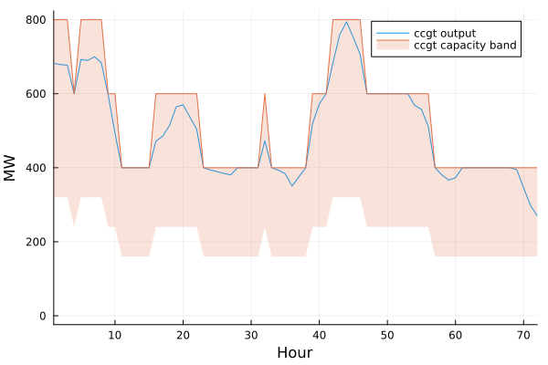
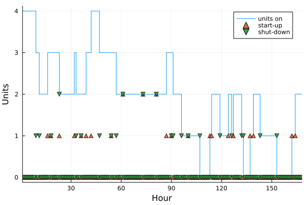
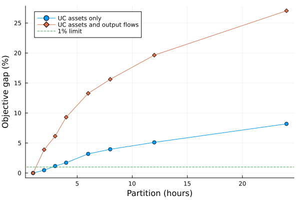

Unit Commitment
Unit commitment decides not only how much an asset produces, but which individual units are operating. It is useful when a generator has a minimum stable output, a no-load cost, or minimum up and down times.
In this tutorial you will:
- Compare
none,basic, and3varunit commitment on one hourly week. - Inspect
units_on,start_up, andshut_down. - Coarsen the resolution of unit commitment variables and measure the resulting size and accuracy tradeoff.
For the formulation, see Unit Commitment Constraints. The configuration parameters are described in Unit Commitment constraints, and the resolution details are covered in Flexible Time Resolution in the Unit Commitment and Ramping Constraints.
The energy system
This case is based on the energy system from the Basics tutorial, with a single 168-hour week selected from the original hourly profiles.
| Asset | Units | Capacity per unit | Minimum operating point | UC method |
|---|---|---|---|---|
ccgt | 4 | 200 MW | 40% | 3var |
ocgt | 2 | 50 MW | 20% | 3var |
wind, solar, ens | 1 | Existing capacities | 0% | none |
The ccgt and ocgt capacities are unchanged in aggregate: four 200 MW units provide 800 MW and two 50 MW units provide 100 MW. Their units_on_cost values represent the cost of keeping one unit online for one hour.
import TulipaIO as TIO
import TulipaEnergyModel as TEM
using DuckDB
using DataFrames
using JuMP
using Plots
input_dir = joinpath(@__DIR__, "my-awesome-energy-system/tutorial-uc")
function load_uc_connection()
connection = DBInterface.connect(DuckDB.DB)
TIO.read_csv_folder(connection, input_dir)
return connection
end
connection = load_uc_connection()
TIO.get_table(connection, "asset")| Row | asset | type | capacity | vintage_method | investment_integer | technical_lifetime | discount_rate | minimum_down_time | minimum_up_time | inter_period_storage_level_bounds | min_operating_point | unit_commitment | unit_commitment_integer |
|---|---|---|---|---|---|---|---|---|---|---|---|---|---|
| String | String | Float64 | String | Bool | Int64 | Float64 | Int64 | Int64 | String | Float64 | String | Bool | |
| 1 | ccgt | producer | 200.0 | aggregated | true | 15 | 0.05 | 4 | 6 | inter_period_only | 0.4 | 3var | true |
| 2 | e_demand | consumer | 0.0 | aggregated | false | 15 | 0.05 | 1 | 1 | inter_period_only | 0.0 | none | false |
| 3 | ens | producer | 1000.0 | aggregated | false | 15 | 0.05 | 1 | 1 | inter_period_only | 0.0 | none | false |
| 4 | ocgt | producer | 50.0 | aggregated | true | 15 | 0.05 | 1 | 1 | inter_period_only | 0.2 | 3var | true |
| 5 | solar | producer | 500.0 | aggregated | true | 15 | 0.05 | 1 | 1 | inter_period_only | 0.0 | none | false |
| 6 | wind | producer | 400.0 | aggregated | true | 15 | 0.05 | 1 | 1 | inter_period_only | 0.0 | none | false |
| 7 | electrolizer | conversion | 100.0 | aggregated | true | 15 | 0.05 | 1 | 1 | inter_period_only | 0.0 | none | false |
| 8 | h2_demand | consumer | 100.0 | aggregated | false | 15 | 0.05 | 1 | 1 | inter_period_only | 0.0 | none | false |
| 9 | smr_ccs | producer | 100.0 | aggregated | true | 15 | 0.05 | 1 | 1 | inter_period_only | 0.0 | none | false |
The default data contains the 3-variable formulation. The two thermal assets are the only assets with unit commitment:
DataFrame(DuckDB.query(connection, """
SELECT
asset, capacity, min_operating_point, unit_commitment,
unit_commitment_integer, minimum_up_time, minimum_down_time
FROM asset
WHERE asset IN ('ccgt', 'ocgt')
ORDER BY asset
"""))| Row | asset | capacity | min_operating_point | unit_commitment | unit_commitment_integer | minimum_up_time | minimum_down_time |
|---|---|---|---|---|---|---|---|
| String | Float64 | Float64 | String | Bool | Int64 | Int64 | |
| 1 | ccgt | 200.0 | 0.4 | 3var | true | 6 | 4 |
| 2 | ocgt | 50.0 | 0.2 | 3var | true | 1 | 1 |
Part 1: hourly unit commitment
The helper below creates a fresh model for each comparison. Fresh connections are important because run_scenario creates internal tables and writes solution values into the connection.
function run_uc_case(
unit_commitment;
minimum_up_time = nothing,
minimum_down_time = nothing,
asset_partition = 1,
flow_partition = nothing,
)
connection = load_uc_connection()
DuckDB.query(connection, """
UPDATE asset
SET unit_commitment = '$unit_commitment'
WHERE asset IN ('ccgt', 'ocgt')
""")
if !isnothing(minimum_up_time)
DuckDB.query(connection, """
UPDATE asset
SET minimum_up_time = $minimum_up_time,
minimum_down_time = $minimum_down_time
WHERE asset IN ('ccgt', 'ocgt')
""")
end
if unit_commitment == "none"
DuckDB.query(connection, """
UPDATE asset
SET min_operating_point = 0.0
WHERE asset IN ('ccgt', 'ocgt')
""")
end
if asset_partition > 1
DuckDB.query(connection, """
CREATE OR REPLACE TABLE assets_rep_periods_partitions AS
SELECT * FROM (VALUES
('ccgt', 2030, 1, '$asset_partition', 'uniform'),
('ocgt', 2030, 1, '$asset_partition', 'uniform')
) AS partitions(asset, milestone_year, rep_period, partition, specification)
""")
end
if !isnothing(flow_partition)
DuckDB.query(connection, """
CREATE OR REPLACE TABLE flows_rep_periods_partitions AS
SELECT * FROM (VALUES
('ccgt', 'e_demand', 2030, 1, '$flow_partition', 'uniform'),
('ocgt', 'e_demand', 2030, 1, '$flow_partition', 'uniform')
) AS partitions(from_asset, to_asset, milestone_year, rep_period, partition, specification)
""")
end
TEM.populate_with_defaults!(connection)
energy_problem = TEM.run_scenario(connection; show_log = false)
return connection, energy_problem
endrun_uc_case (generic function with 1 method)No unit commitment
With unit_commitment = "none", the model dispatches the available capacity economically. It does not create units_on, start_up, or shut_down variables.
none_connection, none_problem = run_uc_case("none")
(none_objective = none_problem.objective_value,
variables = JuMP.num_variables(none_problem.model),
constraints = JuMP.num_constraints(none_problem.model; count_variable_in_set_constraints = false))(none_objective = 3.3458135033921525e6, variables = 1344, constraints = 1680)none can still be combined with a positive min_operating_point to represent a must-run asset. That creates a minimum-output constraint, but it does not create commitment variables.
Basic unit commitment
The basic formulation adds units_on. Output is bounded below by the minimum operating point and above by the capacity of the units that are on.
basic_connection, basic_problem = run_uc_case("basic")
units_on_basic = TIO.get_table(basic_connection, "var_units_on")
first(units_on_basic, 8)| Row | id | asset | milestone_year | rep_period | time_block_start | time_block_end | unit_commitment_integer | solution |
|---|---|---|---|---|---|---|---|---|
| Int64 | String | Int32 | Int32 | Int32 | Int32 | Bool | Float64 | |
| 1 | 1 | ccgt | 2030 | 1 | 1 | 1 | true | 4.0 |
| 2 | 2 | ccgt | 2030 | 1 | 2 | 2 | true | 4.0 |
| 3 | 3 | ccgt | 2030 | 1 | 3 | 3 | true | 4.0 |
| 4 | 4 | ccgt | 2030 | 1 | 4 | 4 | true | 3.0 |
| 5 | 5 | ccgt | 2030 | 1 | 5 | 5 | true | 4.0 |
| 6 | 6 | ccgt | 2030 | 1 | 6 | 6 | true | 4.0 |
| 7 | 7 | ccgt | 2030 | 1 | 7 | 7 | true | 4.0 |
| 8 | 8 | ccgt | 2030 | 1 | 8 | 8 | true | 4.0 |
The ccgt output and its commitment state can be plotted together. The shaded interval is the feasible output band for the committed units.
basic_flow = TIO.get_table(basic_connection, "var_flow")
basic_ccgt_flow = filter(row ->
row.from_asset == "ccgt" && row.to_asset == "e_demand", basic_flow)
basic_units_on = filter(row -> row.asset == "ccgt", units_on_basic)
plot(
basic_ccgt_flow.time_block_start,
basic_ccgt_flow.solution;
label = "ccgt output",
xlabel = "Hour",
ylabel = "MW",
xlims = (1, 72),
legend = :topright,
)
plot!(
basic_units_on.time_block_start,
200 .* basic_units_on.solution;
fillrange = 0.4 .* 200 .* basic_units_on.solution,
fillalpha = 0.2,
label = "ccgt capacity band",
)
Three-variable unit commitment
The 3var formulation adds start_up and shut_down and links them to changes in units_on. It also enforces minimum up and down times.
First use one-hour minimum times. This isolates the difference between the variable sets: the objective should match basic for this case.
threevar_hourly_connection, threevar_hourly_problem = run_uc_case(
"3var";
minimum_up_time = 1,
minimum_down_time = 1,
)
threevar_hourly_problem.objective_value4.048014636861077e6Now use the tutorial defaults: ccgt has a 6-hour minimum up time and 4-hour minimum down time, while ocgt keeps 1-hour limits:
threevar_connection, threevar_problem = run_uc_case(
"3var";
)
start_up = TIO.get_table(threevar_connection, "var_start_up")
shut_down = TIO.get_table(threevar_connection, "var_shut_down")
first(start_up[start_up.asset .== "ccgt", :], 10)| Row | id | asset | milestone_year | rep_period | time_block_start | time_block_end | unit_commitment_integer | solution |
|---|---|---|---|---|---|---|---|---|
| Int64 | String | Int32 | Int32 | Int32 | Int32 | Bool | Float64 | |
| 1 | 1 | ccgt | 2030 | 1 | 1 | 1 | true | 0.0 |
| 2 | 2 | ccgt | 2030 | 1 | 2 | 2 | true | 0.0 |
| 3 | 3 | ccgt | 2030 | 1 | 3 | 3 | true | 0.0 |
| 4 | 4 | ccgt | 2030 | 1 | 4 | 4 | true | 0.0 |
| 5 | 5 | ccgt | 2030 | 1 | 5 | 5 | true | 0.0 |
| 6 | 6 | ccgt | 2030 | 1 | 6 | 6 | true | 0.0 |
| 7 | 7 | ccgt | 2030 | 1 | 7 | 7 | true | 0.0 |
| 8 | 8 | ccgt | 2030 | 1 | 8 | 8 | true | 0.0 |
| 9 | 9 | ccgt | 2030 | 1 | 9 | 9 | true | 0.0 |
| 10 | 10 | ccgt | 2030 | 1 | 10 | 10 | true | 0.0 |
The minimum-time restrictions reduce the number of switching opportunities. Compare the commitment and transition variables:
ccgt_units_on = filter(row -> row.asset == "ccgt", TIO.get_table(threevar_connection, "var_units_on"))
ccgt_start_up = filter(row -> row.asset == "ccgt", start_up)
ccgt_shut_down = filter(row -> row.asset == "ccgt", shut_down)
plot(
ccgt_units_on.time_block_start,
ccgt_units_on.solution;
seriestype = :steppost,
label = "units on",
xlabel = "Hour",
ylabel = "Units",
xlims = (1, 168),
)
scatter!(
ccgt_start_up.time_block_start,
ccgt_start_up.solution;
label = "start-up",
marker = :utriangle,
)
scatter!(
ccgt_shut_down.time_block_start,
ccgt_shut_down.solution;
label = "shut-down",
marker = :dtriangle,
)
The three modes can be compared using the objective and model size:
comparison = DataFrame(
mode = ["none", "basic", "3var (1h up/down)", "3var (tutorial defaults)"],
objective = [
none_problem.objective_value,
basic_problem.objective_value,
threevar_hourly_problem.objective_value,
threevar_problem.objective_value,
],
variables = [
JuMP.num_variables(none_problem.model),
JuMP.num_variables(basic_problem.model),
JuMP.num_variables(threevar_hourly_problem.model),
JuMP.num_variables(threevar_problem.model),
],
structural_constraints = [
JuMP.num_constraints(p.model; count_variable_in_set_constraints = false) for p in
(none_problem, basic_problem, threevar_hourly_problem, threevar_problem)
],
)
comparison| Row | mode | objective | variables | structural_constraints |
|---|---|---|---|---|
| String | Float64 | Int64 | Int64 | |
| 1 | none | 3.34581e6 | 1344 | 1680 |
| 2 | basic | 4.04801e6 | 1680 | 2688 |
| 3 | 3var (1h up/down) | 4.04801e6 | 2352 | 3696 |
| 4 | 3var (tutorial defaults) | 4.0521e6 | 2352 | 3696 |
none is the least restrictive model. basic adds commitment and minimum-output logic, while 3var adds transition variables and minimum up/down-time logic.
Part 2: coarser commitment resolution
The resolution of units_on, start_up, and shut_down is controlled by assets_rep_periods_partitions. A partition of 4 means that one commitment variable represents a four-hour block. This can reduce the number of integer variables substantially.
The output-flow resolution is separate. If the flow remains hourly, the model can still dispatch hourly while the commitment state changes only every four hours. Coarsening both the commitment variables and the thermal output flows reduces the model further, but can change the dispatch more noticeably.
We use the hourly 3var case as the reference and measure the objective gap:
hourly_reference = threevar_problem.objective_value
partitions = [1, 2, 3, 4, 6, 8, 12, 24]
function partition_sweep(; coarsen_flows = false)
rows = NamedTuple[]
for partition in partitions
connection, problem = run_uc_case(
"3var";
asset_partition = partition,
flow_partition = coarsen_flows ? partition : nothing,
)
push!(rows, (
partition,
objective = problem.objective_value,
objective_gap = 100 * (problem.objective_value / hourly_reference - 1),
variables = JuMP.num_variables(problem.model),
structural_constraints = JuMP.num_constraints(
problem.model;
count_variable_in_set_constraints = false,
),
units_on_rows = DataFrames.nrow(TIO.get_table(connection, "var_units_on")),
))
end
return DataFrame(rows)
end
asset_partition_results = partition_sweep()
flow_partition_results = partition_sweep(; coarsen_flows = true)| Row | partition | objective | objective_gap | variables | structural_constraints | units_on_rows |
|---|---|---|---|---|---|---|
| Int64 | Float64 | Float64 | Int64 | Int64 | Int64 | |
| 1 | 1 | 4.0521e6 | 0.0 | 2352 | 3696 | 336 |
| 2 | 2 | 4.20971e6 | 3.88973 | 1680 | 2520 | 168 |
| 3 | 3 | 4.30118e6 | 6.14697 | 1456 | 2128 | 112 |
| 4 | 4 | 4.4292e6 | 9.30648 | 1344 | 1932 | 84 |
| 5 | 6 | 4.59019e6 | 13.2794 | 1232 | 1736 | 56 |
| 6 | 8 | 4.68512e6 | 15.6222 | 1176 | 1638 | 42 |
| 7 | 12 | 4.84831e6 | 19.6494 | 1120 | 1540 | 28 |
| 8 | 24 | 5.14794e6 | 27.044 | 1064 | 1442 | 14 |
The first sweep changes only the commitment resolution. The second also coarsens the two thermal output flows. Compare the results:
asset_partition_results| Row | partition | objective | objective_gap | variables | structural_constraints | units_on_rows |
|---|---|---|---|---|---|---|
| Int64 | Float64 | Float64 | Int64 | Int64 | Int64 | |
| 1 | 1 | 4.0521e6 | 0.0 | 2352 | 3696 | 336 |
| 2 | 2 | 4.07125e6 | 0.472624 | 1848 | 3024 | 168 |
| 3 | 3 | 4.09913e6 | 1.16068 | 1680 | 2800 | 112 |
| 4 | 4 | 4.12176e6 | 1.71916 | 1596 | 2688 | 84 |
| 5 | 6 | 4.18147e6 | 3.19279 | 1512 | 2576 | 56 |
| 6 | 8 | 4.21247e6 | 3.95779 | 1470 | 2520 | 42 |
| 7 | 12 | 4.25923e6 | 5.11178 | 1428 | 2464 | 28 |
| 8 | 24 | 4.38415e6 | 8.19467 | 1386 | 2408 | 14 |
flow_partition_results| Row | partition | objective | objective_gap | variables | structural_constraints | units_on_rows |
|---|---|---|---|---|---|---|
| Int64 | Float64 | Float64 | Int64 | Int64 | Int64 | |
| 1 | 1 | 4.0521e6 | 0.0 | 2352 | 3696 | 336 |
| 2 | 2 | 4.20971e6 | 3.88973 | 1680 | 2520 | 168 |
| 3 | 3 | 4.30118e6 | 6.14697 | 1456 | 2128 | 112 |
| 4 | 4 | 4.4292e6 | 9.30648 | 1344 | 1932 | 84 |
| 5 | 6 | 4.59019e6 | 13.2794 | 1232 | 1736 | 56 |
| 6 | 8 | 4.68512e6 | 15.6222 | 1176 | 1638 | 42 |
| 7 | 12 | 4.84831e6 | 19.6494 | 1120 | 1540 | 28 |
| 8 | 24 | 5.14794e6 | 27.044 | 1064 | 1442 | 14 |
Select the largest partition whose objective gap remains below 1%:
acceptable = filter(:objective_gap => gap -> gap <= 1.0, asset_partition_results)
selected_partition = maximum(acceptable.partition)
selected_partition2For this case, the asset-only sweep selects partition 2. The exact value is data-dependent: a partition that is acceptable for one demand and availability profile may be too coarse for another.
plot(
asset_partition_results.partition,
asset_partition_results.objective_gap;
marker = :circle,
label = "UC assets only",
xlabel = "Partition (hours)",
ylabel = "Objective gap (%)",
)
plot!(
flow_partition_results.partition,
flow_partition_results.objective_gap;
marker = :diamond,
label = "UC assets and output flows",
)
hline!([1.0]; linestyle = :dash, label = "1% limit")
A coarser partition reduces integer variables and structural constraints, but it restricts when a unit can change state. Always compare against a sufficiently resolved reference and choose the coarsest partition that preserves the accuracy needed for the study.